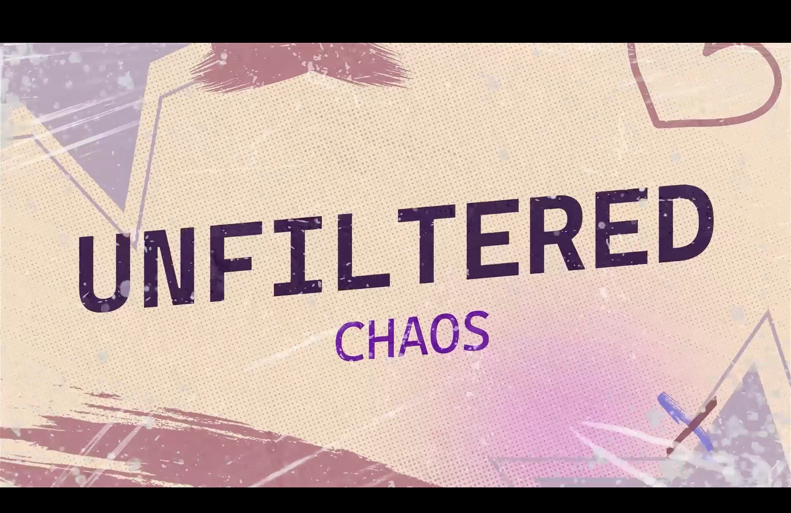
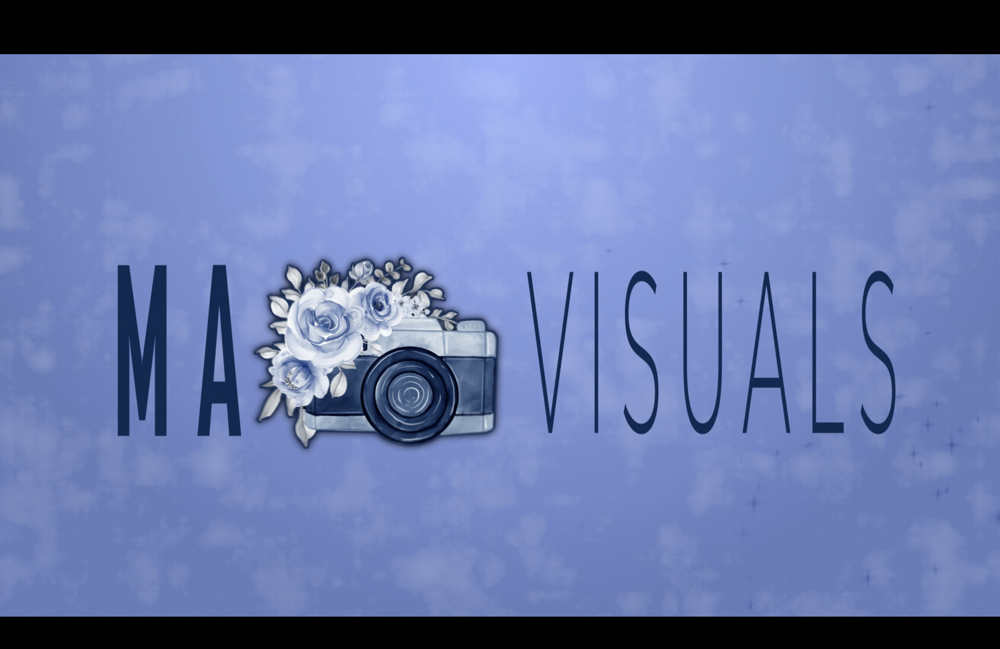
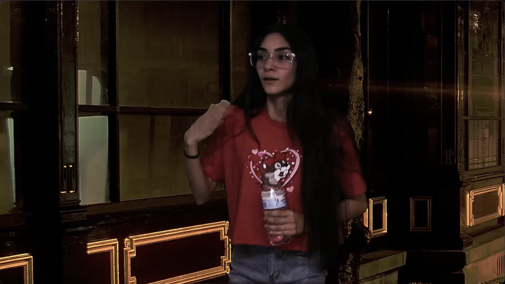
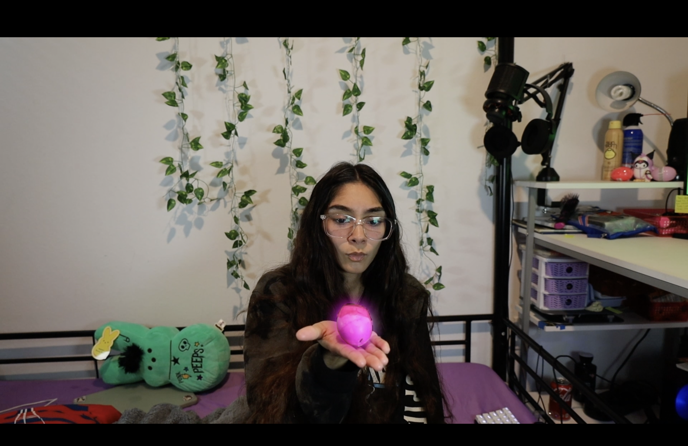
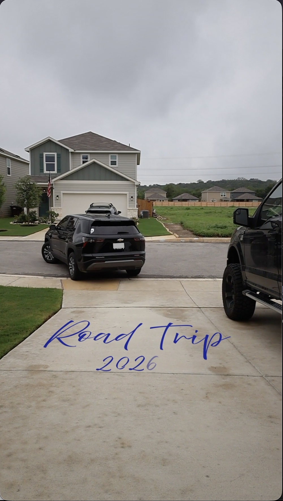

VIDEO / MOTION DESIGN
Unfiltered Chaos
A fast-paced editing project using pacing, transitions, sound design, and visual elements to build an engaging story.
View project ↗05 / VISUAL STORYTELLING
Selected content and creative projects developed with Creative Cloud experience.

A fast-paced editing project using pacing, transitions, sound design, and visual elements to build an engaging story.
View project ↗
A promotional-style edit featuring color correction, motion graphics, and smooth transitions.
View project ↗
A visual effects project demonstrating compositing, color correction, and creative editing techniques.
View project ↗
A screen-replacement and visual effects project featuring an animated message reveal.
View project ↗
A travel video using shot variety, pacing, transitions, camera tracking, and color correction to tell the story of a family trip.
View project ↗